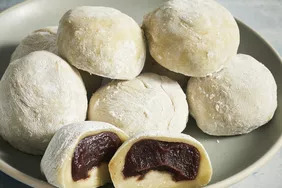

Mochi

Description
Mochi (もち) is a Japanese sweet cake made with glutinous rice flour.
Ingredients
- 1 cup of sweetened red bean paste
- 1 cup of glutinous rice flour
- 1 teaspoon of green tea powder
- 1 cup of water
- 1/2 cup of cornstarch
Steps
- Wrap the red bean paste in aluminum foil and place it in the freezer until it's solid.
- Mix the glutinous rice flour and green tea powder in a microwave-safe bowl.
- Stir in the water, then stir in the sugar. Mix until it's smooth.
- Cover the bowl with plastic wrap and microwave it for 3 minutes and 30 seconds.
- Remove red bean paste from freezer and divide into 8 equal balls.
- Create a work surface with the cornstarch. Roll 2 tablespoons of the hot rice flour mixture into a ball.
Flatten the ball and place one ball of frozen red bean paste in the centre. Pinch and press the dough around
the bean paste.
- Repeat the prior step to create the remaining mochi.